Figures
39 figures SVG, dont 11 animées. Clic droit → « enregistrer l'image » pour les réutiliser.
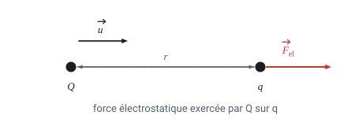
01-force-coulomb.svg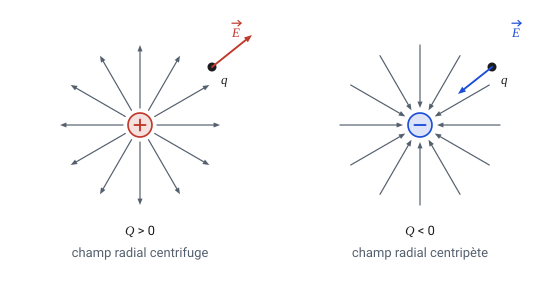
02-champ-radial.svg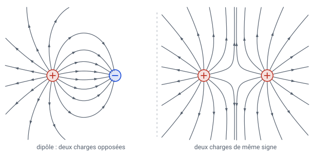
03-lignes-de-champ.svg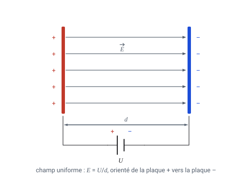
04-champ-uniforme.svg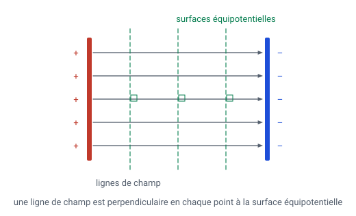
05-equipotentielles.svg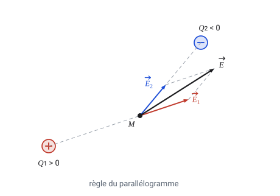
06-superposition.svg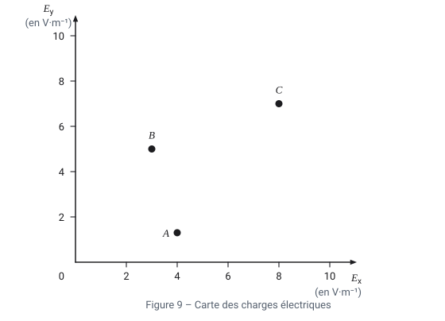
07-exercice5-carte.svg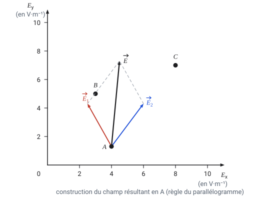
08-exercice5-corrige.svg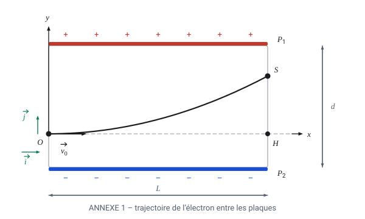
09-thomson-annexe.svg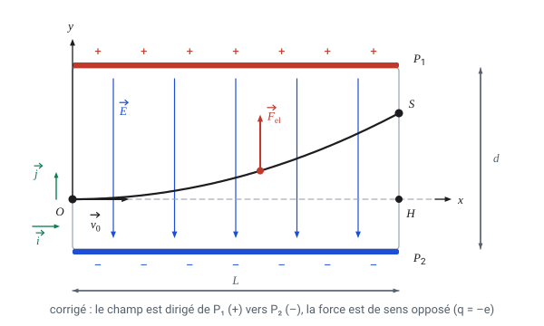
10-thomson-corrige.svg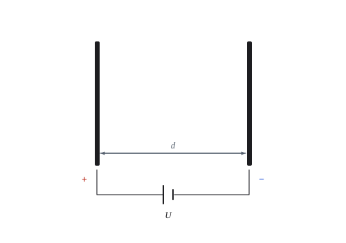
11-bac-condensateur.svg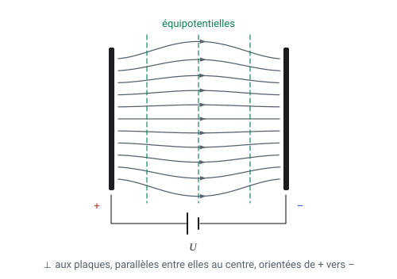
12-bac-condensateur-corrige.svg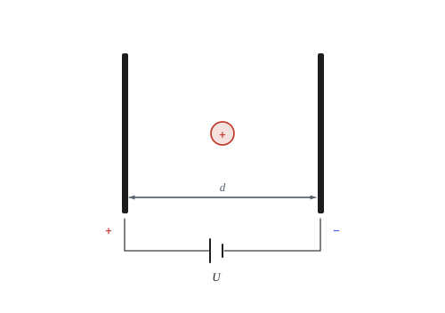
13-bac-balle.svg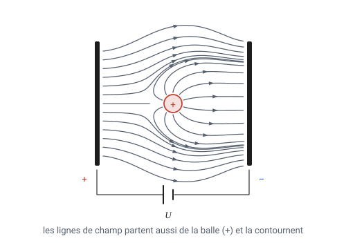
14-bac-balle-corrige.svg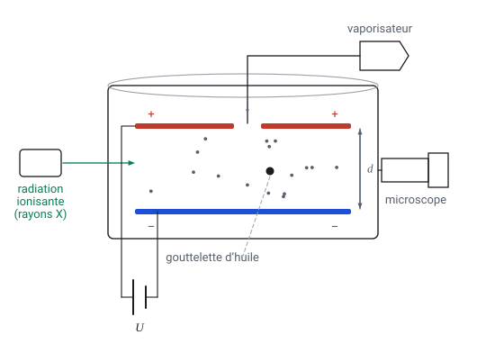
15-millikan-dispositif.svg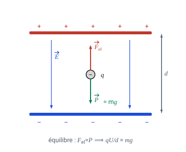
16-millikan-suspension.svg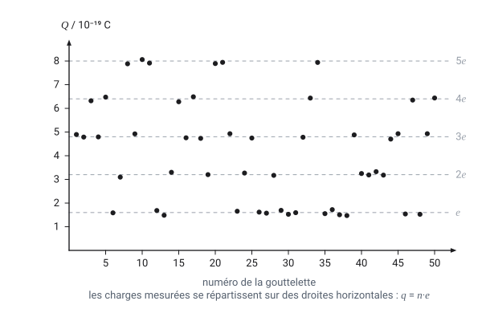
17-millikan-resultats.svg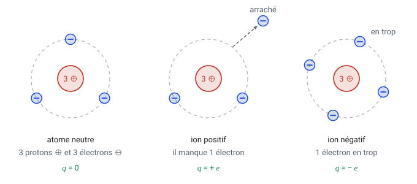
20-atome-charges.svg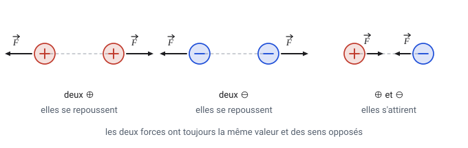
21-attraction-repulsion.svg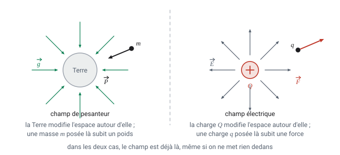
22-notion-de-champ.svg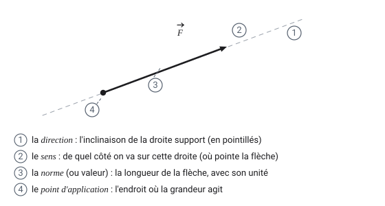
23-vecteur-anatomie.svg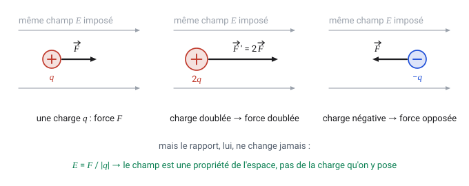
24-charge-test.svg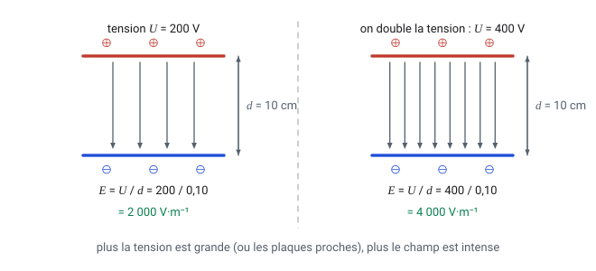
25-tension-plaques.svg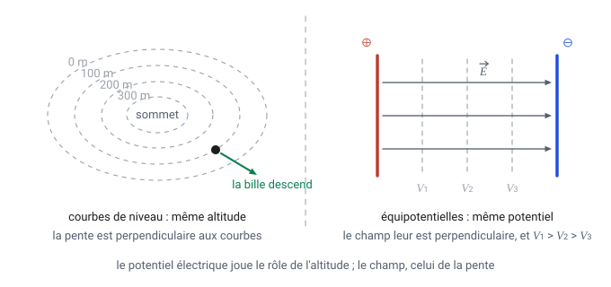
26-potentiel-analogie.svg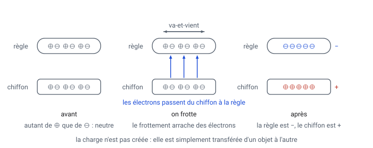
30-charge-par-frottement.svg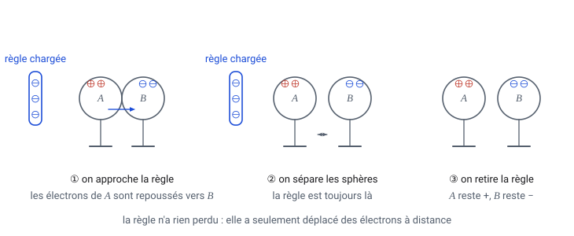
31-charge-par-influence.svg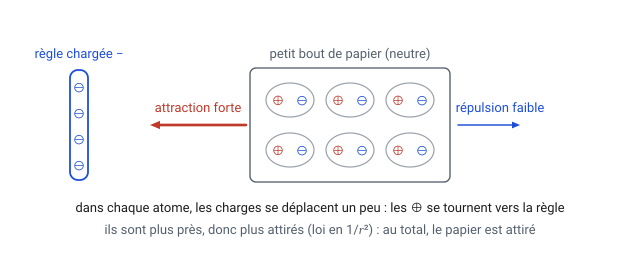
32-attraction-objet-neutre.svg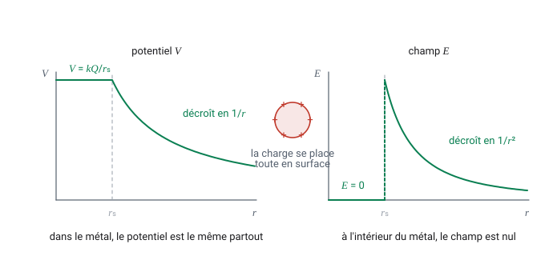
33-sphere-conductrice.svg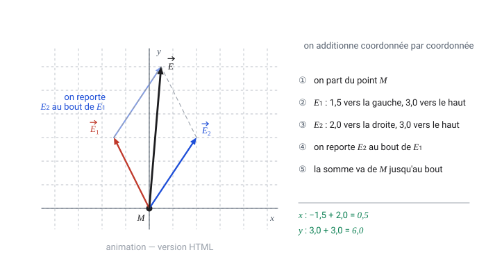
anim-01-addition-vecteurs.svg · animée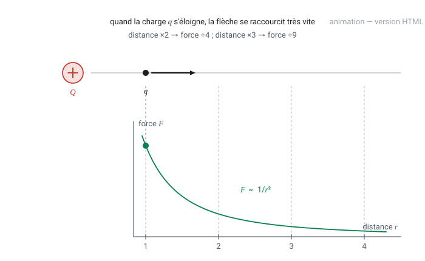
anim-02-loi-carre-inverse.svg · animée
anim-03-force-et-charge.svg · animée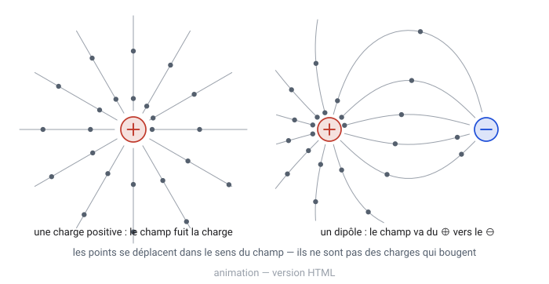
anim-04-lignes-de-champ.svg · animée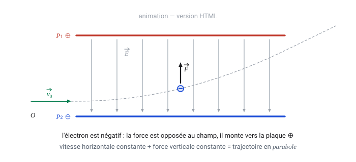
anim-05-thomson.svg · animée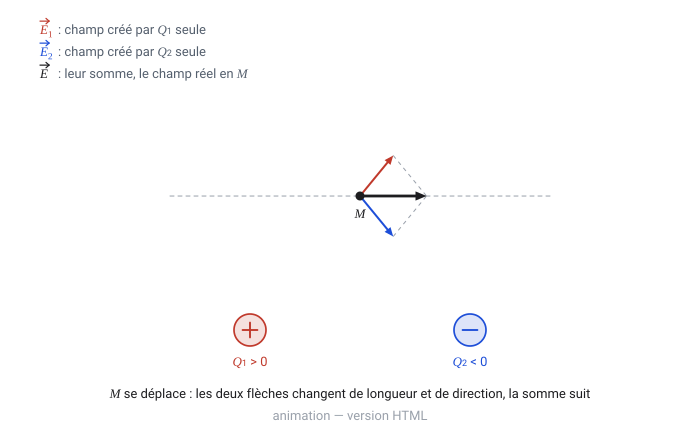
anim-06-superposition.svg · animée
anim-07-millikan.svg · animée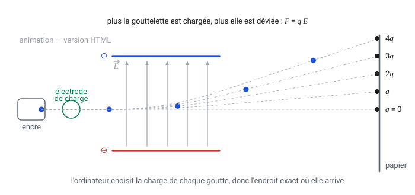
anim-08-jet-encre.svg · animée
sol-04-coulomb-cas.svg · animée
sol-09-champ-au-milieu.svg · animée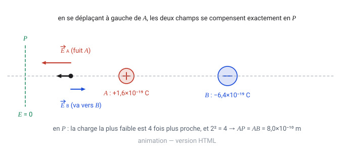
sol-13-point-nul.svg · animée